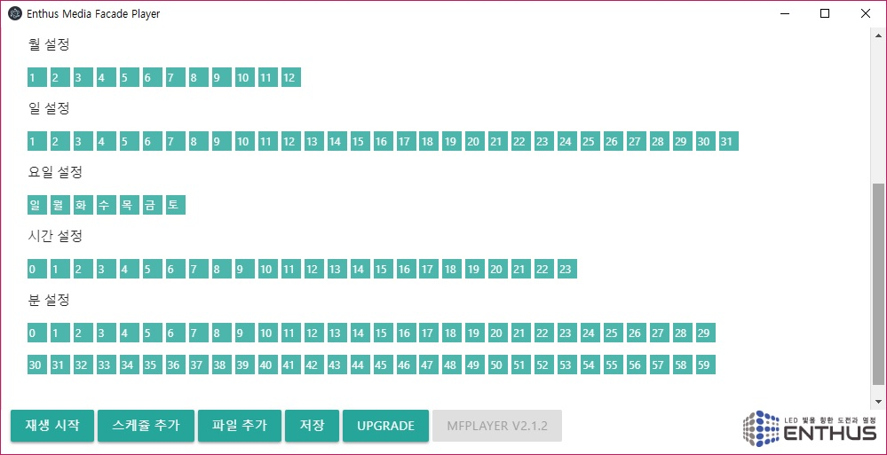
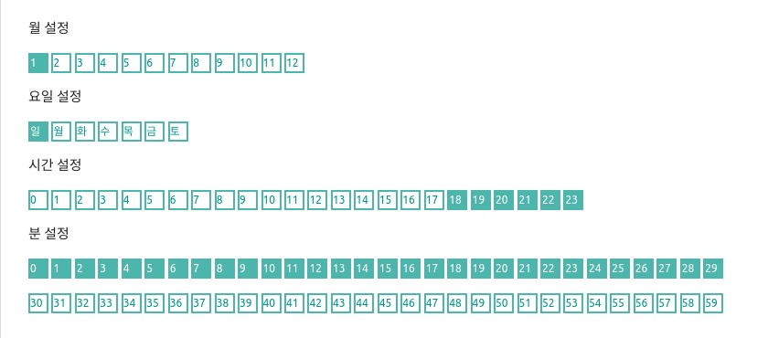
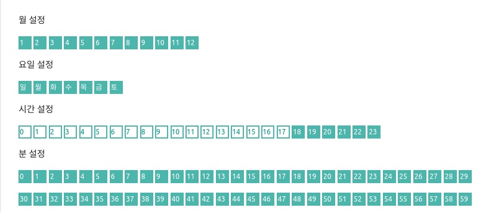
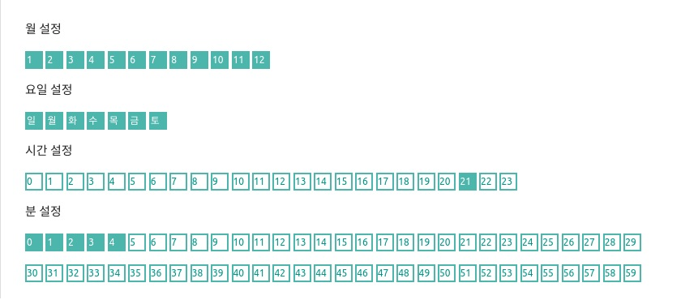

테스트
선택된 미디어와 위치 설정이 올바르게 되었는지 확인하려면 테스트 버튼을 누릅니다. 아래 메인 메뉴의 정지 버튼을 통해 테스트를 멈출 수 있습니다.

삭제
삭제 버튼을 클릭하면 경고메시지와 함께 스케쥴이 삭제됩니다.

활성화
스케쥴을 지우지 않고 사용하지 않는 상태로 유지하려면 활성화 박스를 클릭해서 상태를 바꿉니다. 활성화 되지 않은 스케쥴은 정해진 시간에 재생되지 않습니다.

시간 설정
Note
MFPlayer 는 반복 재생을 위한 시간을 설정합니다. 시간 설정 버튼이 선택되어 있는 시간에만 반복적인 재생을 합니다.
스케쥴 편집창을 스크롤해 내리면 월, 요일, 일, 시간, 분 설정 버튼을 선택할 수 있습니다.

매년 1월 일요일에만 저녁 6시에서 8시사이에 30동안만 미디어가 재생할 경우 아래의 그림과 같이 설정합니다.

일년동안 저녁 6시에서 밤 12시까지 재생하는 예시는 아래와 같습니다.

일년동안 저녁 9시에 5 분동안 재생하는 예시는 아래와 같습니다.

재생
스케쥴 설정이 완료되면 재생 시작 버튼을 눌러 스케쥴 동작을 시작합니다. 스케쥴에 있는 시간 설정에 따라 정해진 시간에 미디어가 재생됩니다. 다시 정지 버튼을 눌러 스케쥴 동작을 멈출 수 있습니다.